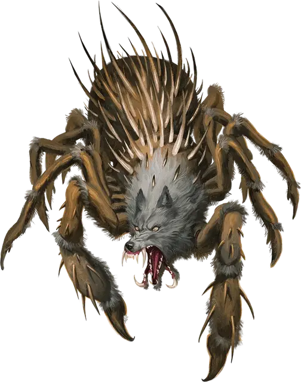

Паукодемон раклюпис
Raklupis Spyder-Fiend
Большое Исчадие (Демон), обычно хаотично-злое

Класс Доспеха 19 (природный доспех)
Хиты 210 (28к10 + 56)
Скорость 40 футов, лазая 40 футов
| мод | спас | ||
|---|---|---|---|
| СИЛ | 17 | +3 | +3 |
| ЛОВ | 20 | +5 | +11 |
| ТЕЛ | 14 | +2 | +8 |
| мод | спас | ||
|---|---|---|---|
| ИНТ | 18 | +4 | +4 |
| МДР | 16 | +3 | +9 |
| ХАР | 23 | +6 | +6 |
Навыки Восприятие +9, Скрытность +11
Иммунитет к урону огонь, холод, электричество, яд
Иммунитет к состояниям отравление
Чувства истинное зрение 120 футов, пассивное Восприятие 19
Языки Общий, Бездны, Телепатия 120 фт.
Опасность 19 (22000 опыта)
Бонус мастерства +6
Особенности
Сопротивление магии. Раклюпис совершает с преимуществом спасброски от заклинаний и прочих магических эффектов.
Паучье лазание. Раклюпис может лазать по сложным поверхностям, включая потолки, без совершения проверок характеристик.
Чувство паутины. Находясь в контакте с паутиной, раклюпис знает точное местоположение всех других существ, находящихся в контакте с той же паутиной.
Хождение по паутине. Раклюпис игнорирует ограничения перемещения, вызванные паутиной.
Действия
Мультиатака. Раклюпис совершает атаку Укусом и две атаки Зазубренным мечом. Он может использовать Ядовитую сферу вместо одной из этих атак.
Укус. Рукопашная атака оружием: +11 к попаданию, досягаемость 5 футов, одна цель. Попадание: 16 (2к10 + 5) колющего урона плюс 18 (4к8) урона ядом. Если цель — существо, то оно должно преуспеть в спасброске Телосложения Сл 20, иначе станет отравленным на 1 минуту. Пока цель отравлена таким образом, она становится недеспособной и не может восстанавливать хиты. Существо может повторять спасбросок в конце каждого своего хода, при успехе заканчивая на себе эффект.
Зазубренный меч. Рукопашная атака оружием: +11 к попаданию, досягаемость 5 футов, одна цель. Попадание: 19 (4к6 + 5) рубящего урона плюс 18 (4к8) урона ядом.
Ядовитая сфера. Дальнобойная атака оружием: +11 к попаданию, дистанция 60/180 футов, одна цель. Попадание: 45 (10к8) урона ядом.
Использование заклинаний. Раклюпис накладывает одно из следующих заклинаний, используя Харизму в качестве базовой характеристики и без использования материальных компонентов (Сл спасброска от заклинаний 20):
• Неограниченно: маскировка [disguise self], невидимость [invisibility] (только на себя), волшебная рука [mage hand], малая иллюзия [minor illusion]
• 2/день: тьма [darkness], подчинение чудовища [dominate monster], множественное внушение [mass suggestion], телекинез [telekinesis], телепортация [teleport]
Бонусные действия
Подчиняющий приказ. Раклюпис может магически окончить состояния очарования и испуга на себе и любом количестве союзников в пределах 60 футов от себя.
Описание
Демонические чудовища, сочетающие в себе худшие черты волков и пауков, передвигаются на раздутых паучьих телах и скрежещут волчьими головами. Паукодемоны обычно покрыты чужими внутренностями, поскольку жестокие убийства являются их любимым времяпровождением. Они сплетают прочную паутину и изобретательны в том, как использовать ее против добычи.
Они объединены в иерархию, основанную на силе и хитрости, где паукодемоны более высокого ранга доминируют над более низкими. Паукодемоны одинакового ранга борются друг с другом за продвижение по службе и охотно обращаются друг против друга, если предательство может улучшить их положение.
Паукодемоны преданно служат своему генералу, пауку-волку Миске [Miska the Wolf-Spider]. Хотя во время заточения Миски в Пандемониуме их редко можно было увидеть, они стали все чаще проявлять себя, когда Миска начал бороться за свое освобождение.
Паукодемон раклюпис
Паукодемоны раклюпис обладают твердым гладким панцирем со сверкающими шипами. Учитывая роскошные пушистые волчьи головы, мощные руки и манящие голоса, раклюпис — единственные паукодемоны, которых можно назвать величественными. Они создают изящные паутинные сферы, которые наполняют своим ядом и бросают во врагов. Раклюпис — тонкие стратеги, и большинство из них командуют легионами паукодемонов меньшего ранга.